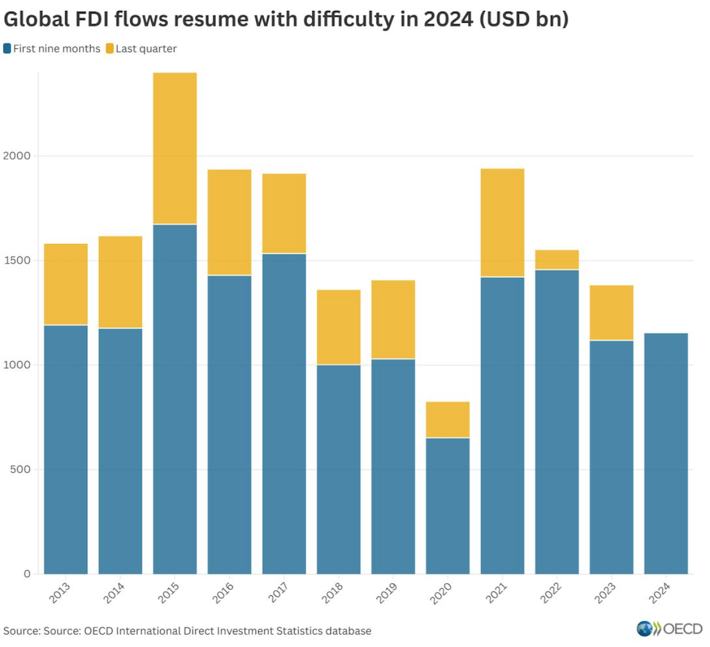

This section demonstrates how to host and embed charts from various sources, including external repositories and local files.
Creating custom visualisations using Vega-Lite to represent data in meaningful ways.
Youth unemployment in France consistently exceeds adult unemployment. Should France introduce differentiated minimum wage rates or targeted youth employment programs?
Youth face unemployment rates consistently higher than adults throughout 2024, suggesting structural barriers beyond economic cycles affect young workers disproportionately.

What I improved: I enhanced data clarity by adding grid lines, refined axis labels for better readability, improved the legend positioning, and modernised the colour scheme for professional presentation.
Demonstrating data collection through web scraping and API calls, followed by data cleaning and visualisation.
This visualisation is built using scraped data from The World Bank's live API. The data was collected using Python (pandas and requests), cleaned, and transformed into tidy (long) format.
Source: World Bank - CO2 Emissions
Base URL: https://api.worldbank.org/v2/
API Structure: country/[country_codes]/indicator/[indicator_code]?format=json&per_page=[number]
Final URL: https://api.worldbank.org/v2/country/wld;chn;kor;fra;gbr/indicator/EN.GHG.CO2.PC.CE.AR5?format=json&per_page=1000
📓 Google Colab Notebook: View Data Scraping Code
Source: Wikipedia - Lebanese Diaspora
Challenges: Cleaned the data by formatting the table to extract the first 15 countries, then removed text and symbols from the population column to retain only numerical values for accurate visualisation.
Using JavaScript loops to dynamically generate multiple charts from different data sources, creating an interactive dashboard of economic indicators for Lebanon.
📓 Google Colab Notebook: View Batch Download Code
Creating geographical visualisations using base maps and choropleth techniques to represent spatial data.
Analysing large-scale UK pricing datasets to extract meaningful insights from millions of individual price observations.
📓 Google Colab Notebook: View Data Analysis Code
📓 Google Colab Notebook: View Data Analysis Code
Demonstrating interactivity in visualisations with tooltips, zooming, and dynamic data exploration capabilities for Lebanon migration data.
Gen AI: I used Gen AI tools as coding assistants for data cleaning and to troubleshoot and make suggestions to improve my codes.